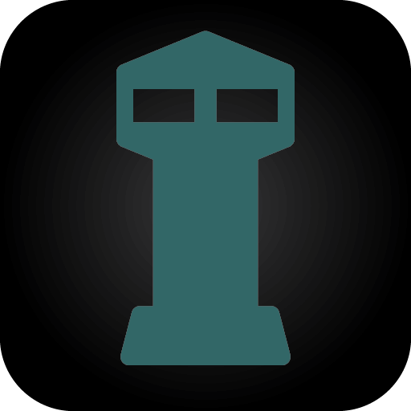

Vedette
1.1.14-9 · iOS 15 及以上分别设置每个 App、守护进程和 App 扩展的 CPU 用量、运行优先级、内存上限和回收优先级，在系统设置里就能调整。
Separate CPU, nice priority, memory limit and reclaim priority settings for apps, daemons and app extensions.
四种规则，可以分开用
- CPU 用量：设置允许使用多少 CPU，超出后可以限制速度或结束进程。
- 运行优先级（nice）：可选 −20～20，数值越小，优先级越高。默认不调整，也可以只改优先级，不打开 CPU 限制。
- 内存上限：分别设置活跃和非活跃内存上限（MiB）。0 恢复记录值；两侧都填 -1 表示解除单进程上限；正数对表示硬上限，不支持只改一侧。
- 回收优先级：按系统档位设置回收优先级，0 = idle；关闭规则会恢复记录值，保留档位和特殊值不应用。高优先级不能避免超出内存上限后被终止。
- 关闭后恢复：会先记住调整前的值，关闭或删除设置时尝试还原；如果被别的工具改过，不会强行改回去。
- 查看结果：上次应用结果有 nice、内存、回收优先级三行，点进去能看到状态、设置目标和最近读回。显示的是历史记录，不是实时监控。
1.1.14-9 更新了什么
- 内存上限和回收优先级设置现在会实际生效（此前只能保存设置）：可以按 App、守护进程和扩展分别设置，不再限制具体机型或系统版本组合；插件会保留原始值，关闭或卸载时尽量恢复。
- “上次应用结果”重做：三行短结果，点进去能看到状态、设置目标和最近读回。所有已识别的实例都确认后才算生效；只有部分实例成功时会写明“部分确认（x/y）”和未应用的数量，不再把多实例一律当成部分成功。
- 结果详情按“结果 / 检查 / 诊断”分区显示，长内容和放大字体下也能正常排版；保存的结果页只保留状态、目标值和最近读回三项。
- 修复个别情况下结果设置被误判为“设置不完整”的问题，结果页可以直接返回编辑；修正“是 / 否”诊断文字的翻译。
- 应用、守护进程和扩展清单只加载一次，内容没变化就不重复重建，重新打开列表更快。
下载与兼容性
优先在包管理器中刷新本源后安装，由客户端按环境选择对应架构。
依赖 PreferenceLoader、Substrate 兼容注入环境及 AltList；roothide 包另依赖 RootHide。
使用时请注意
运行优先级不等于 CPU 用量上限，也不等于保后台。CPU 限制太低或优先级调得太激进，可能反而卡顿；不要让多个工具反复修改同一目标。
内存上限和回收优先级会实际写入目标进程。设置值可能被系统改写或拒绝，结果页显示的是实际读回；进程重新启动后，规则会重新应用。高回收优先级不能避免进程超出内存上限后被系统终止。
卸载前会尽量恢复调整前的值（使用之前观测到的数值，不保证完全等于系统最初策略），恢复失败只提示，不会挡住卸载；进程退出或重启后，本次调整也会失效。恢复记录会保留，必要时可以查看。